In this section I will talk about the process of creating the painting, and how I went about showcasing
historical imagery in my work. I will also include my reflection at the end.
First, I decided what I wanted to discuss in my project and what imagery would
represent each point of discussion. I played around with sketches to block in my painting and test out
different ideas.
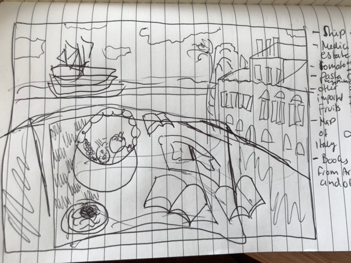
Sketch one
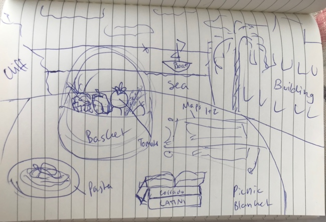
Sketch two
Finally I landed on eight key elements: a boat, a tomato, a plate of pasta, a
building, a map and three cookbooks.
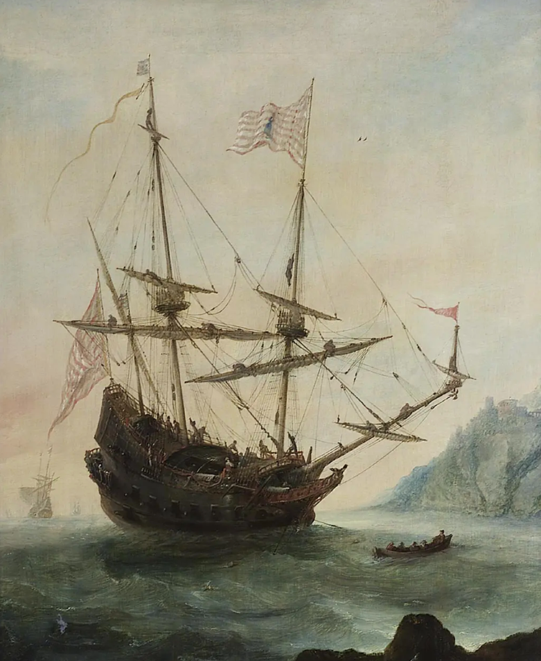
Santa Maria at Anchor, 1628[51]
The Boat
When designing the boat, I used this painting. It is titled “The Santa Maria
at Anchor” 1628 by Andries Van Eertvelt. The Santa Maria is the ship which Christopher Columbus
used to sail to the Americas. I used this image to represent the Columbian Exchange and the
subsequent effect on Italian cuisine.
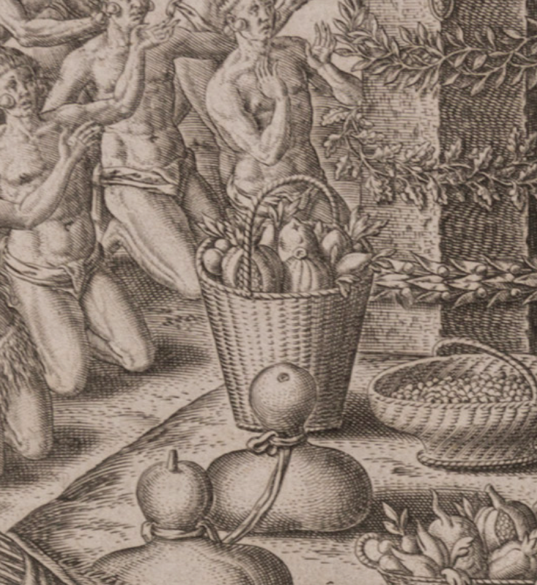
Theodor de Bry, 1590[52]
The Tomato
When designing the tomato I wanted to represent all of the foods brought to
Italy by the Columbian Exchange. The basket itself is based largely on this image, taken from a
plate by Theordor de Bry. It is representing an offering that the Native Americans made to the
explorers who came to their lands. I wished to emulate the sense of abundance and show that,
though these fruits and vegetables were a gift to Italy, they were taken from Native Americans
and are representative of countless deaths and imperialist theft.
When designing the fruit, I looked to the works of Giorgio Bonelli, an eighteenth-century botanist
and Illustrator. His work Hortus Romanus, 1772 was used for reference as he drew many of the plants
brought in by the Columbian exchange. This pineapple and tomato are examples of his work and were
used in the design of the painting.
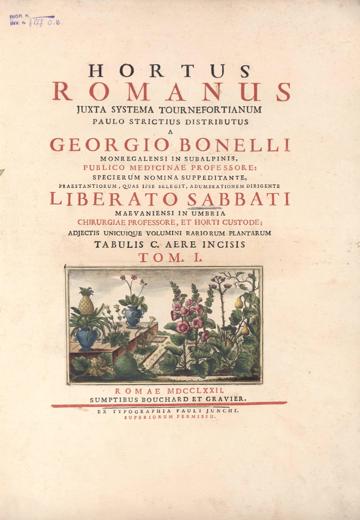
[53]
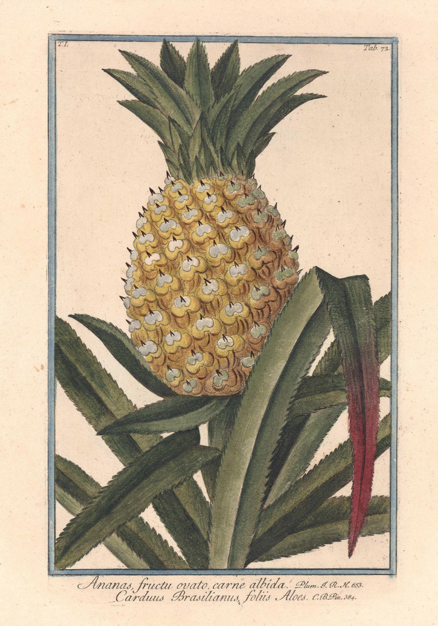
[54]
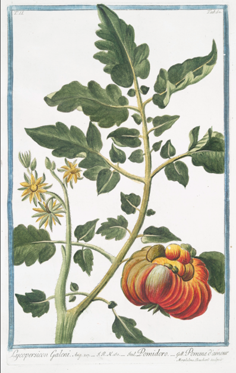
[55]
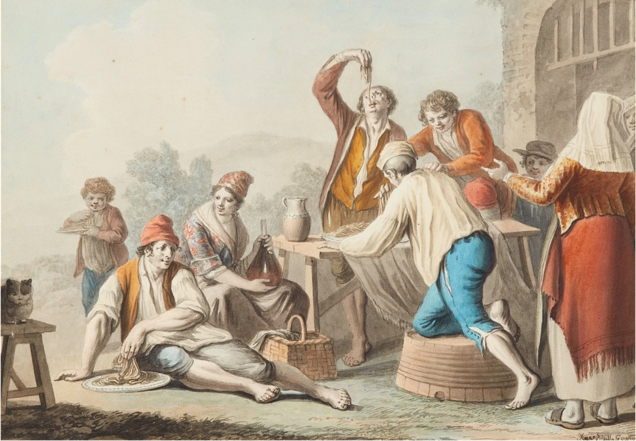
Saverio Della Gatta, 1805[56]
The Pasta
When designing the plate of pasta, this Painting called “Two works: Eating
Spaghetti Outdoors and Priests on a Walk” 1805 by Saverio Della Gatta, was the main inspiration.
The feeling of joyously eating pasta was something I wished to capture.
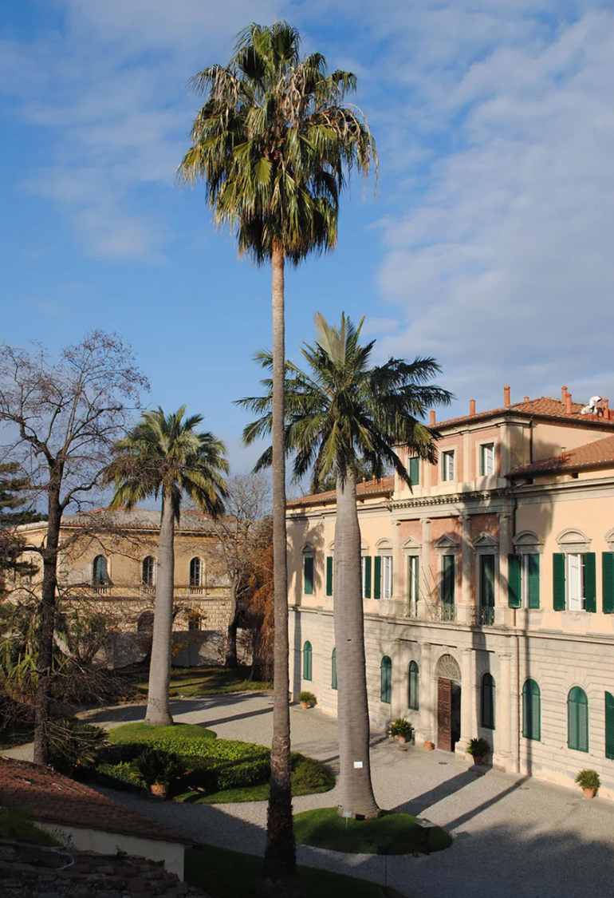
Botanical Gardens of Pisa, Piazzale Arcangeli[57]
The Building
The building in the painting is representing the Botanical Gardens and
Museum in Pisa. It is the location Tomatoes were first recorded in Italy and the gardens were
home to many species from the new world. This image was taken from the Gardens’ official
website.
The Map
When designing the map in the painting, these two maps were used. The first
map is from 1838, pre-unification, and clearly shows the division between regions, particularly
north and south. The second map is from 1882, post-unification, and shows Italy as it is now.
Both maps were used to create my map, representing Italy both as it now is, but still with north
and south divided.
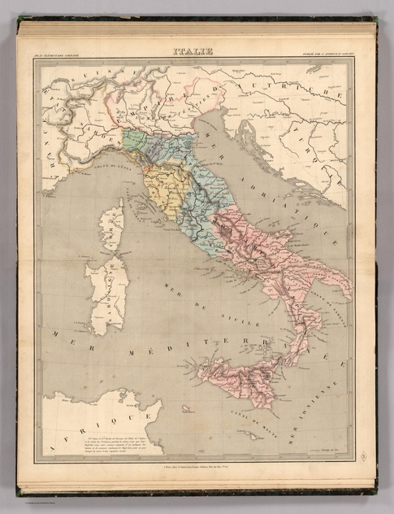
Italy, 1838[58]
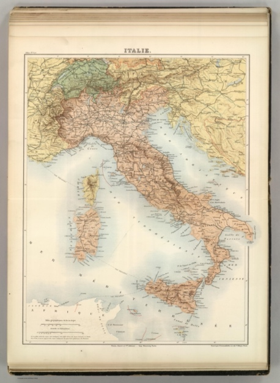
Italy, 1838[59]
The Cookbooks
Designing the books, I kept them minimal so as to not complicate the style. I simply
wrote the names of Latini and Corrado on the spines to identify them. The Artusi cookbook is shown open,
indicating it being the most recent and relevant of the books being discussed.
Reflection
My chosen topic of Italy’s foodscape was of great interest to me, and I was very passionate about the
subject matter. The idea of cultural development, and particularly culinary development is something I
have a strong pull towards as I love to cook (and eat). I was also very interested in exploring cultural
development as intersected with social and political movements and events. The impact of external
national changes is reflected in all elements of cultural expression, though I believe food to be the
most representative as it is the most accessible. It is also one which forms the nucleus of both the
house and the family, and centres women, which many cultural pursuits at the time did not. The thesis of
the project is that culture, while organically developing, often requires an external or intentional
push in order to undergo significant revolution. This is explored through the Columbian exchange and
individual actors who felt compelled to seek out and formulate a national culinary identity through
literature. The medium chosen was a painting, which was very enjoyable for me as I love to paint and was
able to visually represent the Italian foodscape while interweaving the discussed elements into a
cohesive whole.
The biggest challenge regarding this topic was the selection and construction of
many different subjects into one narrative. I am aware that my topic is quite broad temporally and
source wise, so I made a concerted effort for it to be focussed in narrative and aim. It was also
challenging to find good primary sources with which to work, as I was focussing on the history of a
foreign country and thus did not have access to in person archives. In order to overcome this, I
focussed my source pool on art and literature of the time, using images to inform my analysis and books
which were contemporary to my topic to explore cultural culinary attitudes of the time. Therefore, my
project has a strong emphasis on cookbooks, which I feel are the best primary representations of Italy
cuisine as it was. Overall, I believe I achieved what I wanted to showcase, the story of how Italy’s
foodscape evolved into what it came to be known as, with focus on the factors which incited great
change.
51. Andries Van Eertvelt, The Santa Maria at Anchor, 1628, painting, The Society for Nautical Research, https://snr.org.uk/maritime-art/santa-maria-anchor/.
52. Theodor de Bry, India Occidentalis.
53. Giorgio Bonelli, Hortus Romanus, 1772, in Giorgio Bonelli Hortus Romanus (Bouchard and Gravier, 1772), 1.
54. Giorgio Bonelli, Ananas Fructo Ovato Carne Albida, 1772, in Giorgio Bonelli Hortus Romanus (Bouchard and Gravier, 1772), 195.
55. Giorgio Bonelli, Lycopersicon Galeni, illustration, Digital Public Library of America, https://dp.la/primary-source-sets/the-columbian-exchange/sources/1577.
56. Saverio Della Gatta, Two works: Eating Spaghetti Outdoors and Priests on a Walk, 1805, watercolour on paper, 25.7x35cm, Mutual Art, https://www.mutualart.com/Artwork/Two-works--Eating-Spaghetti-Outdoors-and/D360038E40143905.
57. Piazzale Arcangeli, 2018, Photo, Orto e Museo Botanico, Università di Pisa, https://www.ortomuseobot.sma.unipi.it/foto/.
58. Soulier, E. Italie.
59. Jouvet et Cie., Italie.